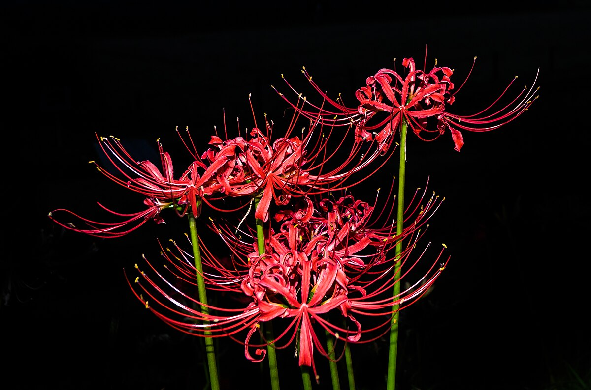

<a href="https://commons.wikimedia.org/wiki/File:Lycoris_radiata_-_Kinchakuda_2018_-_1.jpg">彼岸花(曼珠沙華)</a> © 2018 by <a href="https://commons.wikimedia.org/wiki/User:Kakidai">柿代</a> is licensed under <a href="https://creativecommons.org/licenses/by-sa/4.0/">CC BY-SA 4.0</a>